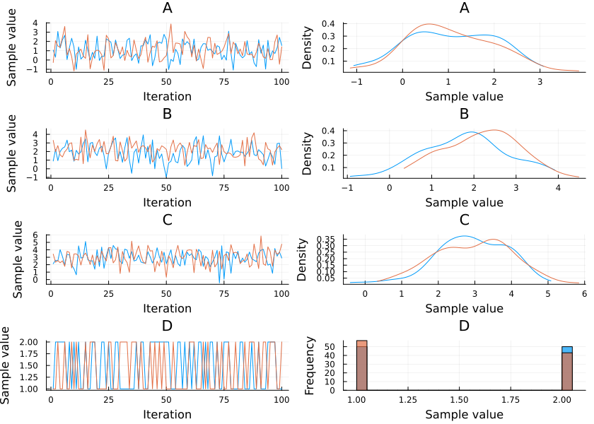
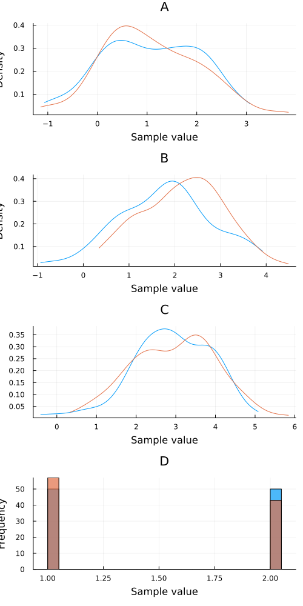
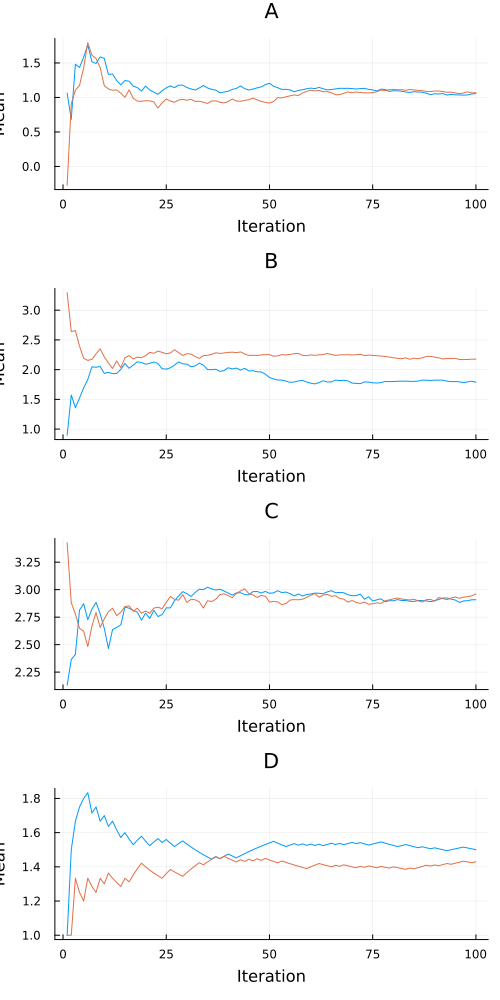
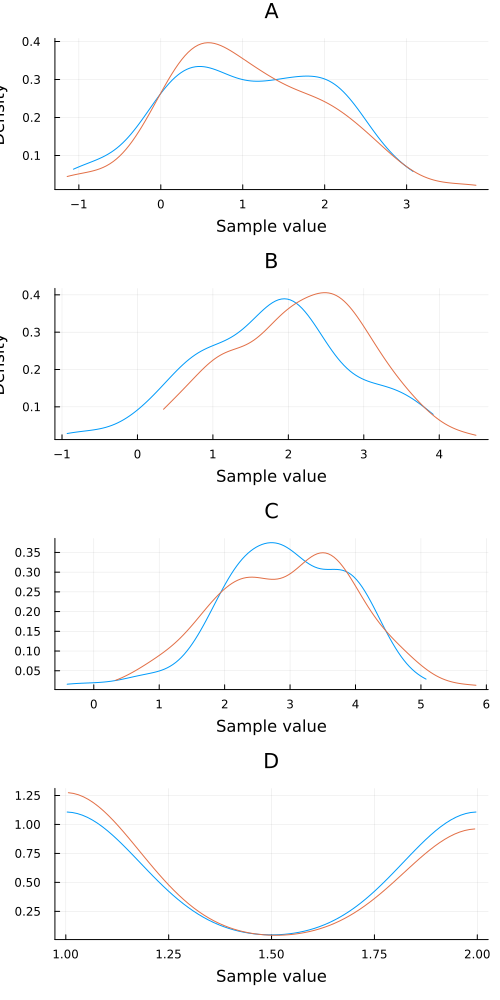
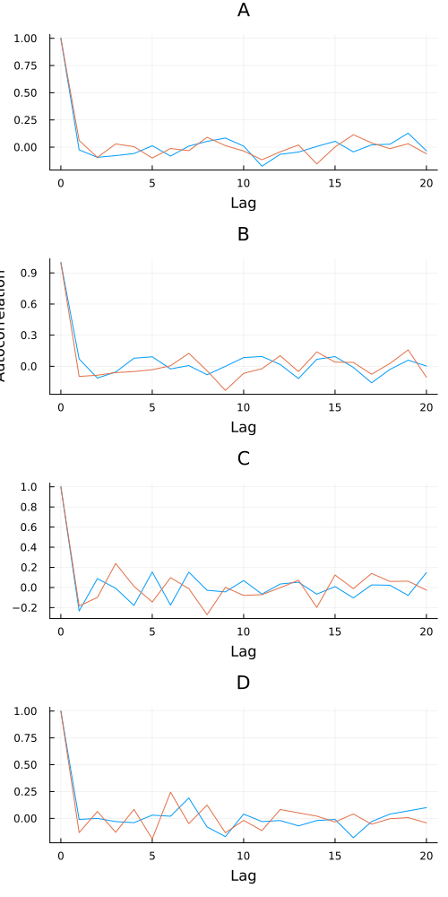
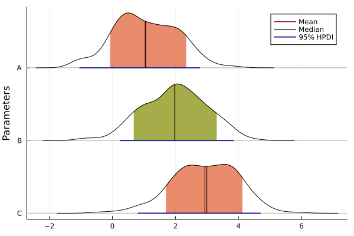
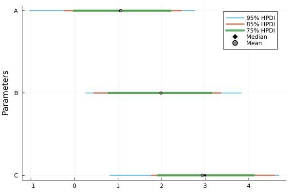
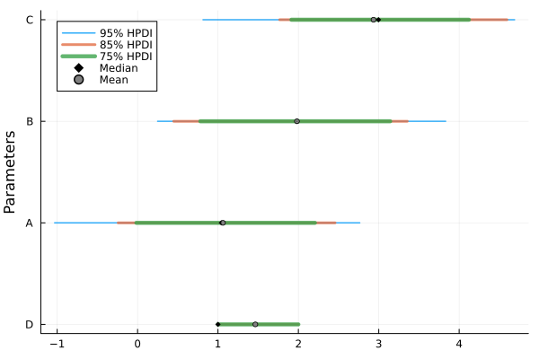

StatsPlots.jl
MCMCChains implements many functions for plotting via StatsPlots.jl.
Simple example
The following simple example illustrates how to use Chain to visually summarize a MCMC simulation:
using MCMCChains
using StatsPlots
# Define the experiment
n_iter = 100
n_name = 3
n_chain = 2
# experiment results
val = randn(n_iter, n_name, n_chain) .+ [1, 2, 3]'
val = hcat(val, rand(1:2, n_iter, 1, n_chain))
# construct a Chains object
chn = Chains(val, [:A, :B, :C, :D])
# visualize the MCMC simulation results
plot(chn; size=(840, 600))
plot(chn, colordim = :parameter; size=(840, 400))Note that the plot function takes the additional arguments described in the Plots.jl package.
Mixed density
plot(chn, seriestype = :mixeddensity)
Or, for all seriestypes, use the alternative shorthand syntax:
mixeddensity(chn)Trace
plot(chn, seriestype = :traceplot)traceplot(chn)Running average
meanplot(chn)
Density
density(chn)
Histogram
histogram(chn)Autocorrelation
autocorplot(chn)
Corner
corner(chn)For plotting multiple parameters, ridgeline, forest and caterpillar plots can be useful.
Ridgeline
ridgelineplot(chn, [:C, :B, :A])
Forest
forestplot(chn, [:C, :B, :A], hpd_val = [0.05, 0.15, 0.25])
Caterpillar
forestplot(chn, chn.name_map[:parameters], hpd_val = [0.05, 0.15, 0.25], ordered = true)
API
MCMCChains.ridgelineplot — Functionridgelineplot(chains::Chains[, params::Vector{Symbol}]; kwargs...)Generate a ridgeline plot for the samples of the parameters params in chains.
By default, all parameters are plotted.
Keyword arguments
The following options are available:
fill_q(default:false) andfill_hpd(default:true): Fill the area below the curve in the quantiles interval (fill_q = true) or the highest posterior density (HPD) interval (fill_hpd = true). If bothfill_q = falseandfill_hpd = false, then the whole area below the curve is filled. If no fill color is desired, it should be specified with series attributes. These options are mutually exclusive.show_mean(default:true) andshow_median(default:true): Plot a vertical line of the mean (show_mean = true) or median (show_median = true) of the posterior density estimate. If both options are set totrue, both lines are plotted.show_qi(default:false) andshow_hpdi(default:true): Plot a quantile interval (show_qi = true) or the largest HPD interval (show_hpdi = true) at the bottom of each density plot. These options are mutually exclusive.q(default:[0.1, 0.9]): The two quantiles used for plotting iffill_q = trueorshow_qi = true.hpd_val(default:[0.05, 0.2]): The complementary probability mass(es) of the highest posterior density intervals that are plotted iffill_hpd = trueorshow_hpdi = true.
If a single parameter is provided, the generated plot is a density plot with all the elements described above.
MCMCChains.ridgelineplot! — Functionridgelineplot(chains::Chains[, params::Vector{Symbol}]; kwargs...)Generate a ridgeline plot for the samples of the parameters params in chains.
By default, all parameters are plotted.
Keyword arguments
The following options are available:
fill_q(default:false) andfill_hpd(default:true): Fill the area below the curve in the quantiles interval (fill_q = true) or the highest posterior density (HPD) interval (fill_hpd = true). If bothfill_q = falseandfill_hpd = false, then the whole area below the curve is filled. If no fill color is desired, it should be specified with series attributes. These options are mutually exclusive.show_mean(default:true) andshow_median(default:true): Plot a vertical line of the mean (show_mean = true) or median (show_median = true) of the posterior density estimate. If both options are set totrue, both lines are plotted.show_qi(default:false) andshow_hpdi(default:true): Plot a quantile interval (show_qi = true) or the largest HPD interval (show_hpdi = true) at the bottom of each density plot. These options are mutually exclusive.q(default:[0.1, 0.9]): The two quantiles used for plotting iffill_q = trueorshow_qi = true.hpd_val(default:[0.05, 0.2]): The complementary probability mass(es) of the highest posterior density intervals that are plotted iffill_hpd = trueorshow_hpdi = true.
If a single parameter is provided, the generated plot is a density plot with all the elements described above.
ridgelineplot(chains::Chains[, params::Vector{Symbol}]; kwargs...)Generate a ridgeline plot for the samples of the parameters params in chains.
By default, all parameters are plotted.
Keyword arguments
The following options are available:
fill_q(default:false) andfill_hpd(default:true): Fill the area below the curve in the quantiles interval (fill_q = true) or the highest posterior density (HPD) interval (fill_hpd = true). If bothfill_q = falseandfill_hpd = false, then the whole area below the curve is filled. If no fill color is desired, it should be specified with series attributes. These options are mutually exclusive.show_mean(default:true) andshow_median(default:true): Plot a vertical line of the mean (show_mean = true) or median (show_median = true) of the posterior density estimate. If both options are set totrue, both lines are plotted.show_qi(default:false) andshow_hpdi(default:true): Plot a quantile interval (show_qi = true) or the largest HPD interval (show_hpdi = true) at the bottom of each density plot. These options are mutually exclusive.q(default:[0.1, 0.9]): The two quantiles used for plotting iffill_q = trueorshow_qi = true.hpd_val(default:[0.05, 0.2]): The complementary probability mass(es) of the highest posterior density intervals that are plotted iffill_hpd = trueorshow_hpdi = true.
If a single parameter is provided, the generated plot is a density plot with all the elements described above.
MCMCChains.forestplot — Functionforestplot(chains::Chains[, params::Vector{Symbol}]; kwargs...)Generate a forest or caterpillar plot for the samples of the parameters params in chains.
By default, all parameters are plotted.
Keyword arguments
ordered(default:false): Ifordered = false, a forest plot is generated. Ifordered = true, a caterpillar plot is generated.fill_q(default:false) andfill_hpd(default:true): Fill the area below the curve in the quantiles interval (fill_q = true) or the highest posterior density (HPD) interval (fill_hpd = true). If bothfill_q = falseandfill_hpd = false, then the whole area below the curve is filled. If no fill color is desired, it should be specified with series attributes. These options are mutually exclusive.show_mean(default:true) andshow_median(default:true): Plot a vertical line of the mean (show_mean = true) or median (show_median = true) of the posterior density estimate. If both options are set totrue, both lines are plotted.show_qi(default:false) andshow_hpdi(default:true): Plot a quantile interval (show_qi = true) or the largest HPD interval (show_hpdi = true) at the bottom of each density plot. These options are mutually exclusive.q(default:[0.1, 0.9]): The two quantiles used for plotting iffill_q = trueorshow_qi = true.hpd_val(default:[0.05, 0.2]): The complementary probability mass(es) of the highest posterior density intervals that are plotted iffill_hpd = trueorshow_hpdi = true.
MCMCChains.forestplot! — Functionforestplot(chains::Chains[, params::Vector{Symbol}]; kwargs...)Generate a forest or caterpillar plot for the samples of the parameters params in chains.
By default, all parameters are plotted.
Keyword arguments
ordered(default:false): Ifordered = false, a forest plot is generated. Ifordered = true, a caterpillar plot is generated.fill_q(default:false) andfill_hpd(default:true): Fill the area below the curve in the quantiles interval (fill_q = true) or the highest posterior density (HPD) interval (fill_hpd = true). If bothfill_q = falseandfill_hpd = false, then the whole area below the curve is filled. If no fill color is desired, it should be specified with series attributes. These options are mutually exclusive.show_mean(default:true) andshow_median(default:true): Plot a vertical line of the mean (show_mean = true) or median (show_median = true) of the posterior density estimate. If both options are set totrue, both lines are plotted.show_qi(default:false) andshow_hpdi(default:true): Plot a quantile interval (show_qi = true) or the largest HPD interval (show_hpdi = true) at the bottom of each density plot. These options are mutually exclusive.q(default:[0.1, 0.9]): The two quantiles used for plotting iffill_q = trueorshow_qi = true.hpd_val(default:[0.05, 0.2]): The complementary probability mass(es) of the highest posterior density intervals that are plotted iffill_hpd = trueorshow_hpdi = true.
forestplot(chains::Chains[, params::Vector{Symbol}]; kwargs...)Generate a forest or caterpillar plot for the samples of the parameters params in chains.
By default, all parameters are plotted.
Keyword arguments
ordered(default:false): Ifordered = false, a forest plot is generated. Ifordered = true, a caterpillar plot is generated.fill_q(default:false) andfill_hpd(default:true): Fill the area below the curve in the quantiles interval (fill_q = true) or the highest posterior density (HPD) interval (fill_hpd = true). If bothfill_q = falseandfill_hpd = false, then the whole area below the curve is filled. If no fill color is desired, it should be specified with series attributes. These options are mutually exclusive.show_mean(default:true) andshow_median(default:true): Plot a vertical line of the mean (show_mean = true) or median (show_median = true) of the posterior density estimate. If both options are set totrue, both lines are plotted.show_qi(default:false) andshow_hpdi(default:true): Plot a quantile interval (show_qi = true) or the largest HPD interval (show_hpdi = true) at the bottom of each density plot. These options are mutually exclusive.q(default:[0.1, 0.9]): The two quantiles used for plotting iffill_q = trueorshow_qi = true.hpd_val(default:[0.05, 0.2]): The complementary probability mass(es) of the highest posterior density intervals that are plotted iffill_hpd = trueorshow_hpdi = true.